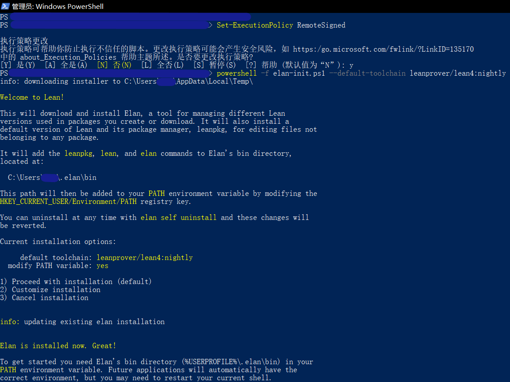

安装Lean
（本节译自Lean Manual的Setup一节，并记录了译者个人遇到的报错以及解决方案）
目前有两种方法来建立Lean 4 开发环境：
快速开始一节介绍使用VS Code使用Lean的方法。
基本安装
所有受支持平台的发布版本都可以在https://github.com/leanprover/lean4/releases中找到。
推荐使用精益版本管理器elan代替下载文件和手动设置路径。
$ elan self update # 以防你很久没升级+elan
# 下载及应用最新的Lean4版本 (https://github.com/leanprover/lean4/releases)
$ elan default leanprover/lean4:stable
# 也可选择，用最新的nightly构建 (https://github.com/leanprover/lean4-nightly/releases)
$ elan default leanprover/lean4:nightly
# 也可选择，只在当前目录下使用Lean4
$ elan override set leanprover/lean4:stable
快速开始
这些指令将引导你使用“基本”设置和VS Code作为编辑器来设置Lean。
-
用
elan安装最新版Lean 4 nightly：在任何支持bash的shell中运行：curl https://raw.githubusercontent.com/leanprover/elan/master/elan-init.sh -sSf | sh -s -- --default-toolchain leanprover/lean4:nightly或者在Windows系统中, 在
cmd中运行curl -O --location https://raw.githubusercontent.com/leanprover/elan/master/elan-init.ps1 powershell -f elan-init.ps1 --default-toolchain leanprover/lean4:nightly del elan-init.ps1译者注：需要科学上网。我在运行第二句话时发生了“无法加载文件……因为在此系统上禁止运行此脚本”报错。解决方案是 1.用管理员身份运行Powershell； 2.输入命令
set-Executionpolicy Remotesigned，选择Y； 然后就可以正常使用了。考虑到系统安全性，建议安装完成后将该选项改回默认值N。 效果如下图  由于本网站无法提供讨论区，欢迎向译者提供新的报错和解决方案，以丰富本页面。可邮件至subfishzhou@gmail.com -
安装 VS Code。
-
打开VS Code 安装
lean4扩展。
-
创建一个以
.lean为扩展名的新文件，并写入以下代码：import Leanpkg #eval Leanpkg.leanVersionString你会看到语法高亮。当你把光标放在最后一行时，在右边有一个“Lean信息视图”，显示已经安装的Lean版本。

-
你成功了！尝试打开一个包含包文件
leanpkg.toml的Lean文件夹。您可以在命令行上使用leanpkg init创建自己的包。软件包必须使用“文件>打开文件夹…”来打开导入。在运行“Lean 4: Refresh File Dependencies”(Ctrl+Shift+X)后，保存的更改可以在其他文件中看到。